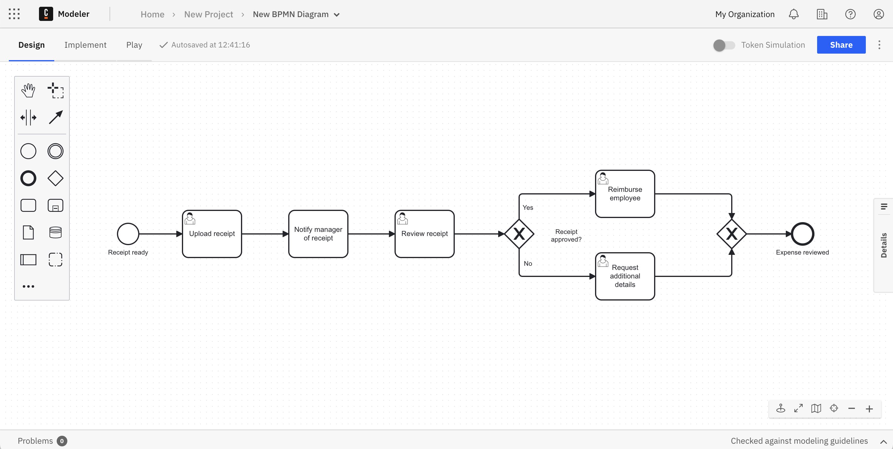
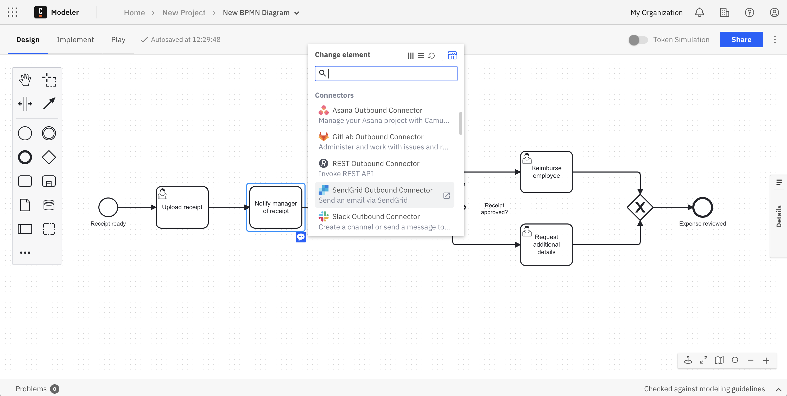
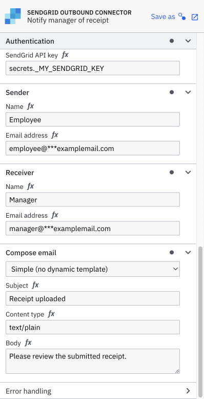
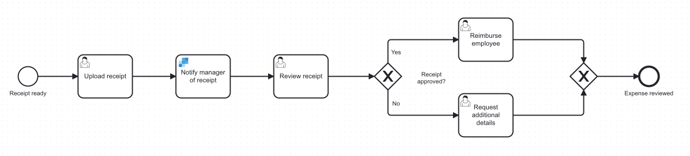
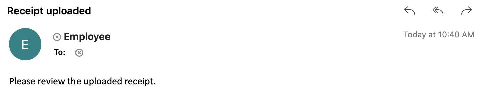
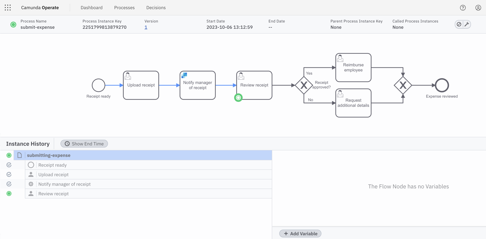

Configure an out-of-the-box Connector
The launch of Camunda 8 also introduced an integration framework with a key goal: integrate faster to reduce the time it takes to automate and orchestrate business processes across systems.
New to Connectors? Review our introduction to Connectors to get familiar with their capabilities.
Connectors achieve this goal. Ready to use out of the box, Connectors help automate complex business processes by inserting them into BPMN diagrams within Web Modeler, and configuring them via the properties panel.
You can also orchestrate APIs, for example by working with a REST Connector. Learn more about types of Connectors.
Connectors technically consist of two parts: the business logic is implemented as a job worker, and the user interface during modeling is provided using an element template. In this guide, we'll walk step-by-step through the implementation of a sample Connector.
Set up
We'll implement our Connector with Modeler. To get started, ensure you’ve created a Camunda 8 account.
You'll also need to create a SendGrid account if you don't have one already, as we'll use SendGrid in our example Connector. Once you've created your account, you will immediately be prompted to create a sender.
Create a cluster
To deploy and run your process, you must create a cluster in Camunda 8.
- To create a cluster, navigate to Console by clicking the square-shaped icon labeled Camunda components in the top left corner, and click Console.
- Click the Clusters tab, and click Create new cluster.
- Name your cluster. For the purpose of this guide, we recommend using the Stable channel and the latest generation. Additionally, select your region. Click Create cluster.
- Your cluster will take a few moments to create. Check the status on the Clusters page or by clicking into the cluster itself and looking at the Applications section.
Even while the cluster shows a status Creating, you can still proceed to begin modeling.
Zeebe must show a status of Healthy to properly deploy your model.
Development clusters
Starter plan users have one development cluster, with free execution for development, included in their plan. Deployment and execution of models (process instances, decision instances, and task users) is provided at no cost. Additional clusters can be purchased through your billing reservations.
Visit the clusters page to learn more about the differences between development clusters and production clusters.
Getting started
Once logged in to your Camunda 8 account, take the following steps:
- From Modeler, click New project > Create new > BPMN Diagram.
- Name your project by replacing the New Project text at the top of the page. In this example, we'll name ours
Expense process. - Select Create new > BPMN Diagram.
- Give your model a descriptive name by replacing the New BPMN Diagram text at the top of the page. Then, give your model a descriptive id within the General tab inside the properties panel on the right side of the screen. In this case, we've named our model
Submit expensewith an id ofsubmitting-expense.
Build a BPMN diagram
Use Web Modeler to design a BPMN flow with the appropriate tasks. To get started, create a task by dragging the rectangular task icon from the palette, or click the existing start event and the displayed task icon.
In this example, we've designed the following BPMN diagram:

To learn more about building your own BPMN diagram from scratch, visit our guide on automating a process using BPMN.
Add a Connector
Here, a receipt is initially uploaded for review. The first task we need to complete is notifying the manager of the uploaded receipt. If we want to leverage our email service to notify the manager, we can utilize a productivity applications Connector to replace this task.
Camunda offers a variety of available Connectors. For example, utilize cloud Connectors to communicate with cloud-native applications and conform to REST, GraphQL, or SOAP protocols. Or, employ service Connectors to integrate with technology enablers like RPA, AI or IOT services. Learn more about our available Connectors to find out which may best suit your business needs.
To add our productivity applications Connector, take the following steps:
- Click the start event. A context pad to the right of the start event will appear.
- Click the Append Connector item in the panel.
- To send an email via SendGrid, for example, select the SendGrid Email Connector option. Name this newly-created task
Notify manger of receipt. This now replaces our original task.
- You need to fill out the required information in the properties panel of this task on the right side of the screen. Here, we'll add an example API key obtained from our SendGrid account, a sender and receiver name and email address, and the email message content.

Our Connector is now attached and ready to use. Your completed diagram should look like the following:

Execute your process diagram
If you change a diagram and it is auto-saved, this has no effect on your cluster(s).
When you deploy the diagram, it becomes available on the selected cluster and new instances can start.
To execute your completed process diagram, click Deploy.
You can now start a new process instance to initiate your process diagram. Click Run.
You can now monitor your instances in Operate.
Variables are part of a process instance and represent the data of the instance. To learn more about these values, variable scope, and input/output mappings, visit our documentation on variables.
Observe your running process
After the user task Upload receipt is completed in Tasklist, an email is automatically sent to the address as specified in the Connectors properties panel we configured earlier.

In Operate, you will now see the process move forward to Review receipt.
